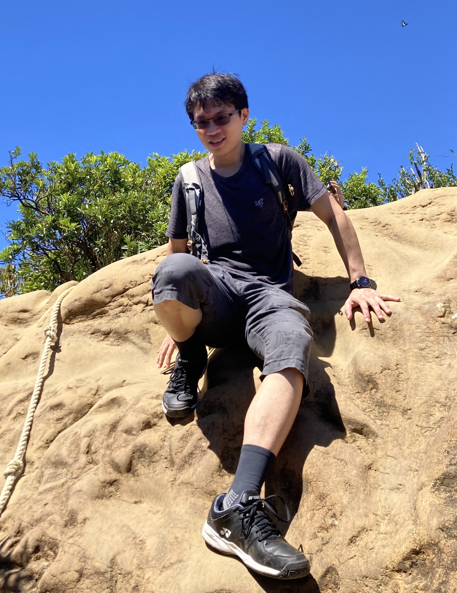

Contact Information:
E-mail:
bensonchou72@gmail.com
bensonchou@gate.sinica.edu.tw
Office: Astronomy - Mathematics Building 621, National Taiwan University
I am a CMC fellow (Postdoc) at Korea Institute for Advanced Study. Previously, I was a postdoc at Academia Sinica. I received my PhD in Department of Mathematics at the University of Utah in May 2022 supervised by Y.P. Lee. My research interests are in algebraic geometry, enumerative geometry, mean field equation, and related topics. Here is my CV.
Research
Upcoming talks and/or travels in 2025
9/15-9/19, Workshop on Algebraic Geometry and Representation Theory
09/25-9/29, East Asian Symplectic Conference 2025 in Sapporo website
10/6-10/10, Enumerative Geometry in East Asia 2025 website
11/3-11/7, Korea-Taiwan enumerative geometry meeting
11/10-11/14, Algebraic Geometry in East Asia website
Teaching
2022 Spring, Math 1090 Business Algebra (Instructor)
2021 Fall, Math 1090 Business Algebra (Instructor)
2020 Fall, Math 1060 Trigonometry (Instructor)
2020 Spring, Math 1060 Trignometry (Instructor)
2019 Fall, Math 1090 Business Algebra (Instructor)
2018 Fall, Math 1060 Trigonometry (Instructor)
2018 Spring, Math 2250 Diff Equation and Linear Algebra (Teaching assistant)
2017 Fall, Math 1210 Calculus I (Teaching assistant)
Invited Talks
2024 10, K-theoretic multiple cover formula on Calabi-Yau threefold, Kalvi IPMU website
2024 10, K-theoretic multiple cover formula, Seoul-Taipei enumerative geometry meeting website
2023 11, Quantum K-invariants = Gopakumar-Vafa invariants on Calabi-Yau threefolds at genus zero, Korea Institute for advanced Study(KIAS), Algebraic Geometry in East Asia(AGEA) website
2023 07, Quantum K-invariants = Gopakumar-Vafa invariants on Calabi-Yau threefolds at genus zero, Institute for Advanced Study in Mathematics(IASM), Concerto in quantum K theory
2023 06, BCOV conjectures on quintic 3-folds, Taida Institute for Mathematical Sciences(TIMS), Calabi-Yau with small parameters website
2019 Virasoro constraints for moduli of weighted pointed stable curves, Colorado State University, FRAGMENT seminar
Last updated 19 June 2025